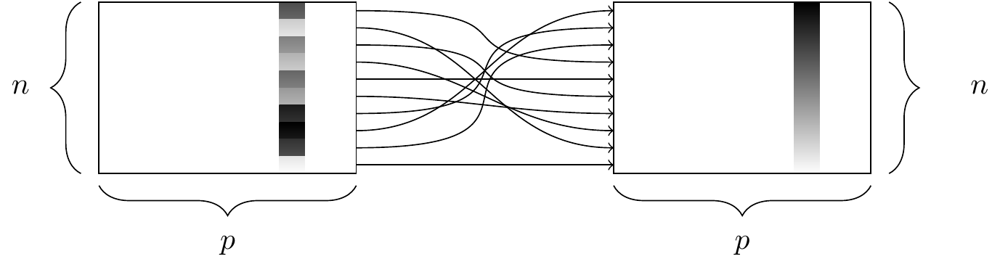

Tidy data is easier to work with, because you have a consistent way of referring to variables and observations. It then becomes easy to manipulate, visualize, and model.
Wide vs. Long Formats
Both of these data sets display information on heart rate observed in individuals across 3 different time periods:
Row = patient. Columns = repeated observations over time.
Often easier to take in at a glance (as in a spreadsheet).
Long data:
Row = one observation. Columns = ID variables + observed variable.
Usually easier to clean, merge with other data, and avoid errors.
Tidy data is more likely to be long.
Most R packages have been written assuming your data is in long format.
“Tidy datasets are all alike but every messy dataset is messy in its own way.”
– Hadley Wickham
Tidyverse packages
We need to install and load a couple of packages. Run these preliminaries:
# load and install package if necessaryif (!require("pacman")) install.packages("pacman")pacman::p_load( tidyverse, nycflights13 )
We see that we have actually loaded a number of packages (which could also be loaded individually): ggplot2, tibble, dplyr, etc. - We can also see information about the package versions and some namespace conflicts.
The tidyverse actually comes with a lot more packages than those that are just loaded automatically.
# A tibble: 3 x 2
model hwy_mean
<chr> <dbl>
1 a4 28.3
2 a4 quattro 25.8
3 a6 quattro 24
Vertical space costs nothing and makes for much more readable/writable code than cramming things horizontally.
All together, this multi-line line of code is called a pipeline.
Key dplyr verbs
There are five key dplyr verbs that you need to learn.
filter: Filter (i.e. subset) rows based on their values.
arrange: Arrange (i.e. reorder) rows based on their values.
select: Select (i.e. subset) columns by their names:
mutate: Create new columns.
summarize: Collapse multiple rows into a single summary value.
Let’s practice these functions together using the starwars data frame that comes pre-packaged with dplyr.
Exercise 1: dplyr::filter
We can chain multiple filter commands with the pipe (|>), or just separate them within a single filter command using commas.
starwars |>filter( species =="Human", height >=190 )
# A tibble: 4 x 14
name height mass hair_color skin_color eye_color birth_year sex gender
<chr> <int> <dbl> <chr> <chr> <chr> <dbl> <chr> <chr>
1 Darth Va~ 202 136 none white yellow 41.9 male mascu~
2 Qui-Gon ~ 193 89 brown fair blue 92 male mascu~
3 Dooku 193 80 white fair brown 102 male mascu~
4 Bail Pre~ 191 NA black tan brown 67 male mascu~
# i 5 more variables: homeworld <chr>, species <chr>, films <list>,
# vehicles <list>, starships <list>
Regular expressions work well too.
starwars |>filter(str_detect(name, "Skywalker"))
# A tibble: 3 x 14
name height mass hair_color skin_color eye_color birth_year sex gender
<chr> <int> <dbl> <chr> <chr> <chr> <dbl> <chr> <chr>
1 Luke Sky~ 172 77 blond fair blue 19 male mascu~
2 Anakin S~ 188 84 blond fair blue 41.9 male mascu~
3 Shmi Sky~ 163 NA black fair brown 72 fema~ femin~
# i 5 more variables: homeworld <chr>, species <chr>, films <list>,
# vehicles <list>, starships <list>
A very common filter use case is identifying (or removing) missing data cases.
starwars |>filter(is.na(height))
# A tibble: 6 x 14
name height mass hair_color skin_color eye_color birth_year sex gender
<chr> <int> <dbl> <chr> <chr> <chr> <dbl> <chr> <chr>
1 Arvel Cr~ NA NA brown fair brown NA male mascu~
2 Finn NA NA black dark dark NA male mascu~
3 Rey NA NA brown light hazel NA fema~ femin~
4 Poe Dame~ NA NA brown light brown NA male mascu~
5 BB8 NA NA none none black NA none mascu~
6 Captain ~ NA NA none none unknown NA fema~ femin~
# i 5 more variables: homeworld <chr>, species <chr>, films <list>,
# vehicles <list>, starships <list>
To remove missing observations, simply use negation: filter(!is.na(height)).
Try this yourself.
# A tibble: 6 x 14
name height mass hair_color skin_color eye_color birth_year sex gender
<chr> <int> <dbl> <chr> <chr> <chr> <dbl> <chr> <chr>
1 Arvel Cr~ NA NA brown fair brown NA male mascu~
2 Finn NA NA black dark dark NA male mascu~
3 Rey NA NA brown light hazel NA fema~ femin~
4 Poe Dame~ NA NA brown light brown NA male mascu~
5 BB8 NA NA none none black NA none mascu~
6 Captain ~ NA NA none none unknown NA fema~ femin~
# i 5 more variables: homeworld <chr>, species <chr>, films <list>,
# vehicles <list>, starships <list>
Exercise 2: dplyr::arrange

arrange sorts your data frame by a particular column (numerically, or alphabetically)
starwars |>arrange(birth_year)
# A tibble: 87 x 14
name height mass hair_color skin_color eye_color birth_year sex gender
<chr> <int> <dbl> <chr> <chr> <chr> <dbl> <chr> <chr>
1 Wicket ~ 88 20 brown brown brown 8 male mascu~
2 IG-88 200 140 none metal red 15 none mascu~
3 Luke Sk~ 172 77 blond fair blue 19 male mascu~
4 Leia Or~ 150 49 brown light brown 19 fema~ femin~
5 Wedge A~ 170 77 brown fair hazel 21 male mascu~
6 Plo Koon 188 80 none orange black 22 male mascu~
7 Biggs D~ 183 84 black light brown 24 male mascu~
8 Han Solo 180 80 brown fair brown 29 male mascu~
9 Lando C~ 177 79 black dark brown 31 male mascu~
10 Boba Fe~ 183 78.2 black fair brown 31.5 male mascu~
# i 77 more rows
# i 5 more variables: homeworld <chr>, species <chr>, films <list>,
# vehicles <list>, starships <list>
We can also arrange items in descending order using arrange(desc()).
starwars |>arrange(desc(birth_year))
# A tibble: 87 x 14
name height mass hair_color skin_color eye_color birth_year sex gender
<chr> <int> <dbl> <chr> <chr> <chr> <dbl> <chr> <chr>
1 Yoda 66 17 white green brown 896 male mascu~
2 Jabba D~ 175 1358 <NA> green-tan~ orange 600 herm~ mascu~
3 Chewbac~ 228 112 brown unknown blue 200 male mascu~
4 C-3PO 167 75 <NA> gold yellow 112 none mascu~
5 Dooku 193 80 white fair brown 102 male mascu~
6 Qui-Gon~ 193 89 brown fair blue 92 male mascu~
7 Ki-Adi-~ 198 82 white pale yellow 92 male mascu~
8 Finis V~ 170 NA blond fair blue 91 male mascu~
9 Palpati~ 170 75 grey pale yellow 82 male mascu~
10 Cliegg ~ 183 NA brown fair blue 82 male mascu~
# i 77 more rows
# i 5 more variables: homeworld <chr>, species <chr>, films <list>,
# vehicles <list>, starships <list>
Exercise 3: dplyr::select
Use commas to select multiple columns out of a data frame. (You can also use “first:last” for consecutive columns). Deselect a column with “-”.
# A tibble: 87 x 5
name mass hair_color skin_color species
<chr> <dbl> <chr> <chr> <chr>
1 Luke Skywalker 77 blond fair Human
2 C-3PO 75 <NA> gold Droid
3 R2-D2 32 <NA> white, blue Droid
4 Darth Vader 136 none white Human
5 Leia Organa 49 brown light Human
6 Owen Lars 120 brown, grey light Human
7 Beru Whitesun Lars 75 brown light Human
8 R5-D4 32 <NA> white, red Droid
9 Biggs Darklighter 84 black light Human
10 Obi-Wan Kenobi 77 auburn, white fair Human
# i 77 more rows
You can also rename some (or all) of your selected variables in place.
starwars |>select(alias=name, planet=homeworld)
# A tibble: 87 x 2
alias planet
<chr> <chr>
1 Luke Skywalker Tatooine
2 C-3PO Tatooine
3 R2-D2 Naboo
4 Darth Vader Tatooine
5 Leia Organa Alderaan
6 Owen Lars Tatooine
7 Beru Whitesun Lars Tatooine
8 R5-D4 Tatooine
9 Biggs Darklighter Tatooine
10 Obi-Wan Kenobi Stewjon
# i 77 more rows
If you just want to rename columns without subsetting them, you can use rename. Try this!
The select(contains(PATTERN)) option provides a nice shortcut in relevant cases.
starwars |>select(name, contains("color"))
# A tibble: 87 x 4
name hair_color skin_color eye_color
<chr> <chr> <chr> <chr>
1 Luke Skywalker blond fair blue
2 C-3PO <NA> gold yellow
3 R2-D2 <NA> white, blue red
4 Darth Vader none white yellow
5 Leia Organa brown light brown
6 Owen Lars brown, grey light blue
7 Beru Whitesun Lars brown light blue
8 R5-D4 <NA> white, red red
9 Biggs Darklighter black light brown
10 Obi-Wan Kenobi auburn, white fair blue-gray
# i 77 more rows
Some other selection helpers: starts_with(), ends_with(), all_of(c("name1", "name2")), matches().
Exercise 4: dplyr::mutate
You can create new columns from scratch, or (more commonly) as transformations of existing columns.
starwars |>select(name, birth_year) |>mutate(dog_years = birth_year *7) |>mutate(comment =paste0(name, " is ", dog_years, " in dog years."))
# A tibble: 87 x 4
name birth_year dog_years comment
<chr> <dbl> <dbl> <chr>
1 Luke Skywalker 19 133 Luke Skywalker is 133 in dog years.
2 C-3PO 112 784 C-3PO is 784 in dog years.
3 R2-D2 33 231 R2-D2 is 231 in dog years.
4 Darth Vader 41.9 293. Darth Vader is 293.3 in dog years.
5 Leia Organa 19 133 Leia Organa is 133 in dog years.
6 Owen Lars 52 364 Owen Lars is 364 in dog years.
7 Beru Whitesun Lars 47 329 Beru Whitesun Lars is 329 in dog yea~
8 R5-D4 NA NA R5-D4 is NA in dog years.
9 Biggs Darklighter 24 168 Biggs Darklighter is 168 in dog year~
10 Obi-Wan Kenobi 57 399 Obi-Wan Kenobi is 399 in dog years.
# i 77 more rows
Note:mutate is order aware. So you can chain multiple mutates in a single call.
starwars |>select(name, birth_year) |>mutate(dog_years = birth_year *7, # Separate with a commacomment =paste0(name, " is ", dog_years, " in dog years.") )
# A tibble: 87 x 4
name birth_year dog_years comment
<chr> <dbl> <dbl> <chr>
1 Luke Skywalker 19 133 Luke Skywalker is 133 in dog years.
2 C-3PO 112 784 C-3PO is 784 in dog years.
3 R2-D2 33 231 R2-D2 is 231 in dog years.
4 Darth Vader 41.9 293. Darth Vader is 293.3 in dog years.
5 Leia Organa 19 133 Leia Organa is 133 in dog years.
6 Owen Lars 52 364 Owen Lars is 364 in dog years.
7 Beru Whitesun Lars 47 329 Beru Whitesun Lars is 329 in dog yea~
8 R5-D4 NA NA R5-D4 is NA in dog years.
9 Biggs Darklighter 24 168 Biggs Darklighter is 168 in dog year~
10 Obi-Wan Kenobi 57 399 Obi-Wan Kenobi is 399 in dog years.
# i 77 more rows
Boolean, logical and conditional operators all work well with mutate too.
# A tibble: 87 x 6
name height mass hair_color skin_color eye_color
<chr> <int> <dbl> <chr> <chr> <chr>
1 LUKE SKYWALKER 172 77 BLOND FAIR BLUE
2 C-3PO 167 75 <NA> GOLD YELLOW
3 R2-D2 96 32 <NA> WHITE, BLUE RED
4 DARTH VADER 202 136 NONE WHITE YELLOW
5 LEIA ORGANA 150 49 BROWN LIGHT BROWN
6 OWEN LARS 178 120 BROWN, GREY LIGHT BLUE
7 BERU WHITESUN LARS 165 75 BROWN LIGHT BLUE
8 R5-D4 97 32 <NA> WHITE, RED RED
9 BIGGS DARKLIGHTER 183 84 BLACK LIGHT BROWN
10 OBI-WAN KENOBI 182 77 AUBURN, WHITE FAIR BLUE-GRAY
# i 77 more rows
Exercise 5: dplyr::summarize
Particularly useful in combination with the group_by command.
# A tibble: 38 x 4
species height mass birth_year
<chr> <dbl> <dbl> <dbl>
1 Aleena 79 15 NA
2 Besalisk 198 102 NA
3 Cerean 198 82 92
4 Chagrian 196 NA NA
5 Clawdite 168 55 NA
6 Droid NA NA NA
7 Dug 112 40 NA
8 Ewok 88 20 8
9 Geonosian 183 80 NA
10 Gungan 209. NA NA
# i 28 more rows
The same across-based workflow that we saw with mutate a few slides back also works with summarize. Though to add arguments, we have to use an anonymous function:
# A tibble: 38 x 4
species height mass birth_year
<chr> <dbl> <dbl> <dbl>
1 Aleena 79 15 NaN
2 Besalisk 198 102 NaN
3 Cerean 198 82 92
4 Chagrian 196 NaN NaN
5 Clawdite 168 55 NaN
6 Droid 131. 69.8 53.3
7 Dug 112 40 NaN
8 Ewok 88 20 8
9 Geonosian 183 80 NaN
10 Gungan 209. 74 52
# i 28 more rows
Other dplyr goodies
ungroup: For ungrouping after using group_by. - Use after doing your grouped summarize or mutate operation, or everything else you do will be super slow.
slice: Subset rows by position rather than filtering by values. - E.g. starwars |> slice(1:10)
pull: Extract a column from as a data frame as a vector or scalar. - E.g. starwars |> filter(sex=="female") |> pull(height)
distinct and count: List unique values, with or without their number of appearances. - E.g. starwars |> distinct(species), or starwars |> count(species) - count is equivalent to group_by and summarize with n():
starwars |>group_by(species) |>summarize(n =n())
# A tibble: 38 x 2
species n
<chr> <int>
1 Aleena 1
2 Besalisk 1
3 Cerean 1
4 Chagrian 1
5 Clawdite 1
6 Droid 6
7 Dug 1
8 Ewok 1
9 Geonosian 1
10 Gungan 3
# i 28 more rows
Challenge 1
List the most common eye colors among female Star Wars characters in descending order of frequency.
# A tibble: 6 x 2
eye_color n
<chr> <int>
1 blue 6
2 brown 4
3 black 2
4 hazel 2
5 unknown 1
6 yellow 1
Explain what each line in the codes do:
Answer:
starwars |> means we are pulling from the starwars dataset
filter() keeps only rows where sex is equal to female
count() counts the number of characters for each unique value in the eye_color column. It automatically creates a new column n with the counts.
arrange(desc(n)) sorts results in descending order of n
group_by() groups by eye color
summarize() computes number of rows with n()
Storing results in memory
So far we haven’t been saving the dataframes that result from our code in memory. Usually, we will want to use them for the next task. Create a new object each time you write a pipeline.
women = starwars |>filter(sex =="female")brown_eyed_women = women |>filter(eye_color =="brown")
Resist the temptation to use the same object name. This is called clobbering since it overwrites the previous version. It ruins your ability to easily go back to previous steps.
# DON'T do thisstarwars = starwars |>filter(sex =="female")
By keeping multiple copies of very similar dataframes, will you waste your computer’s memory? Usually, no – R is smart and stores only the changes between objects.
Key tidyr verbs
pivot_longer: Pivot wide data into long format.
pivot_wider: Pivot long data into wide format.
separate: Separate (i.e. split) one column into multiple columns.
unite: Unite (i.e. combine) multiple columns into one.
Which of pivot_longer vs pivot_wider produces “tidy” data?
Exercise 6: tidyr::pivot_longer
stocks =data.frame( ## Could use "tibble" instead of "data.frame" if you prefertime =as.Date('2009-01-01') +0:1,X =rnorm(2, 10, 1),Y =rnorm(2, 10, 2),Z =rnorm(2, 10, 5) )stocks
time X Y Z
1 2009-01-01 10.660600 10.49751 7.522628
2 2009-01-02 8.242109 12.02031 7.400682
# A tibble: 6 x 3
time stock price
<date> <chr> <dbl>
1 2009-01-01 X 10.7
2 2009-01-01 Y 10.5
3 2009-01-01 Z 7.52
4 2009-01-02 X 8.24
5 2009-01-02 Y 12.0
6 2009-01-02 Z 7.40
Exercise 7: tidyr::pivot_wider
Now we can use pivot_wider to go back to the original dataframe:
first_name last_name
1 Adam Smith
2 Paul Samuelson
3 Milton Friedman
Exercise 9: tidyr::separate
Related is separate_rows, for splitting cells with multiple values into multiple rows:
jobs =data.frame(name =c("Joe", "Jill"),occupation =c("President", "First Lady, Professor, Grandmother") ) jobs
name occupation
1 Joe President
2 Jill First Lady, Professor, Grandmother
# Now split out Jill's various occupations into different rowsjobs |>separate_rows(occupation)
# A tibble: 5 x 2
name occupation
<chr> <chr>
1 Joe President
2 Jill First
3 Jill Lady
4 Jill Professor
5 Jill Grandmother
Related is separate_rows, for splitting cells with multiple values into multiple rows:
jobs =data.frame(name =c("Joe", "Jill"),occupation =c("President", "First Lady, Professor, Grandmother") ) jobs
name occupation
1 Joe President
2 Jill First Lady, Professor, Grandmother
# Now split out Jill's various occupations into different rowsjobs |>separate_rows(occupation, sep =", ")
# A tibble: 4 x 2
name occupation
<chr> <chr>
1 Joe President
2 Jill First Lady
3 Jill Professor
4 Jill Grandmother
Exercise 10: tidyr::unite
gdp =data.frame(yr =rep(2016, times =4),mnth =rep(1, times =4),dy =1:4,gdp =rnorm(4, mean =100, sd =2) )gdp
yr mnth dy gdp
1 2016 1 1 97.10958
2 2016 1 2 99.25788
3 2016 1 3 98.84579
4 2016 1 4 104.39035
## Combine "yr", "mnth", and "dy" into one "date" columngdp |>unite(date, c("yr", "mnth", "dy"), sep ="-")
date gdp
1 2016-1-1 97.10958
2 2016-1-2 99.25788
3 2016-1-3 98.84579
4 2016-1-4 104.39035
gdp_u <- gdp |>unite(date, c("yr", "mnth", "dy"), sep ="-")
Note that unite will automatically create a character variable.
If you want to convert it to something else (e.g. date or numeric) then you will need to modify it using mutate. This example uses the lubridate package’s super helpful date conversion functions.
library(lubridate)gdp_u |>mutate(date =ymd(date))
date gdp
1 2016-01-01 97.10958
2 2016-01-02 99.25788
3 2016-01-03 98.84579
4 2016-01-04 104.39035
Challenge 2
Using nycflights13, create a table of average arrival delay (in minutes) by day (in rows) and carrier (in columns).
Hint: Recall that you can tabulate summary statistics using group_by and summarize:
Click on the assignment, and you’ll be prompted to submit it.
Mark the pages associated with each exercise. All of the pages of your lab should be associated with at least one question (i.e., should be “checked”).
Select the first page of your .PDF submission to be associated with the “Workflow & formatting” section.
Grading
Component
Points
Replicating Ex 1-10
85
Challenge
5
Creating Github Account
5
Workflow & formatting
5
The “Workflow & formatting” grade is to assess the reproducible workflow and document format.